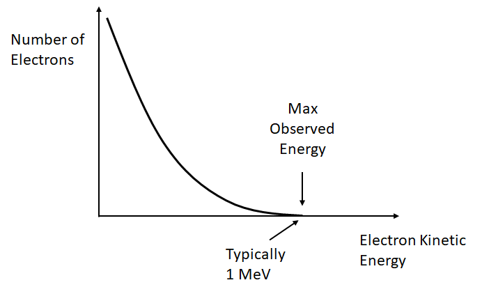
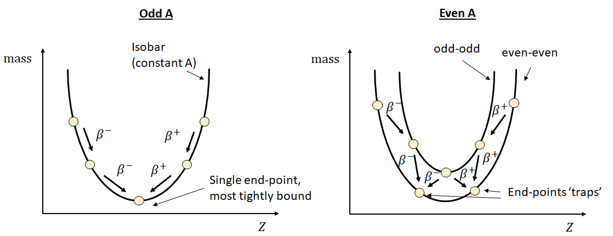

Physics and Astronomy, University of Kent
We now move on to look at other modes of radioactive decay: beta and, more briefly, gamma decay.
Beta Decay (\(\beta\)-decay) is the emission of an electron or a positron from the nucleus. If the nucleus has an excess of neutrons, a neutron can decay into a proton and an electron - the proton remains in the nucleus and the electron is emitted. This is referred to as Beta-minus, \(\beta^-\), decay. Similarly, a proton can decay into a neutron and a positron, with the positron emitted, known as Beta-plus (\(\beta^+\)) decay. Both of these decays are mediated by the weak interaction, which you will study later in the module.
A positron is the antiparticle of an electron, it has identical mass but opposite charge. The positron will quickly annihilate with any electron encountered. This results in the emission of two gamma rays, each of energy 0.511 MeV (the rest energy of the electron/positron) emitted in (almost) opposite directions. This is convenient for the technology called Positron Emission Tomography (PET) as detecting these two photons allows the emission to be localised and hence a 3D image (tomogram) to be created. Those of you taking Medical Physics will learn more about this.
Unlike in alpha decay, where discrete values of energy are released, the emitted electron or positron has a range of possible energies up to some maximum. The maximum is the Q-value of the decay, i.e.
\[\begin{equation} Q = (m_X - m_Y - m_e)c^2 \end{equation}\] where \(m_X\) and \(m_Y\) are the masses of the parent and daughter nuclei, respectively. As for \(\alpha\)-decay, the Q-value must be positive, meaning that the daughter nucleus must be more tightly bound (more stable) than the parent.

At first sight it is quite strange that the electron/positron does not take practically all of the energy (with a small amount going to the much more massive nucleus) - where does it go? This was a mystery for some time, and led to the discovery of neutrinos.
Beta decay is always accompanied by the emission of an electron neutrino. \(\beta^-\) decay results in the emission of an anti-neutrino, \(\beta^+\) decay results in the emission of a neutrino. You will study neutrinos in the particle physics section of the module, but here you should be aware that they are uncharged and have a very small rest mass (\(< 1~\rm eV\)) We know they must be emitted because:
The neutrino carries away some energy, allowing for the observed spectrum of energy for the electrons/positrons
Without the neutrino, we do not conserve spin
For \(\beta^-\) decay, the process is \[\begin{equation} n \rightarrow p + e^- + \bar{\nu_e}, \end{equation}\]
while for \(\beta^+\) decay, the process is \[\begin{equation} p \rightarrow n + e^+ + \nu_e, \end{equation}\]
where \(\nu_e\) and \(\bar{\nu_e}\) are the (electron) neutrino and anti-neutrino, respectively. There is a third possible decay called electron capture, \[\begin{equation} p + e^-\rightarrow n + \nu_e, \end{equation}\] where one of the orbital electrons is absorbed into the nucleus. This has the same net effect as \(\beta^+\) decay as the positron from the \(\beta^+\) decay will annihilate with an electron. Positron capture, while technically possible, is hindered by the lack of positrons in normal environments.
In \(\beta^+\) decay a nucleus converts a proton into a neutron, while in \(\beta^-\) decay a nucleus converts a neutron into a proton. \(\beta^+\) decay therefore occurs for nuclei with an excess of protons and \(\beta^-\) decay for nuclei with a deficit of protons with respect to the line of stability. There is no change in the nucleon number, \(A\).
For example, Cobalt-60 decays into Nickel-60 by \(\beta^-\) decay with a half-life of 5.27 days, reducing its excess of neutrons: \[\begin{equation} {}^{60}_{27}\text{Co} \rightarrow {}^{60}_{28}\text{Ni} + e^- + \bar{\nu_e}. \end{equation}\]
An example of \(\beta^+\) decay is: \[\begin{equation} {}^{230}_{91}\text{Pa} \rightarrow {}^{230}_{90}\text{Th} + e^+ + \nu_e. \end{equation}\]
Equivalently, we could have electron capture: \[\begin{equation} {}^{230}_{91}\text{Pa} + e^- \rightarrow {}^{230}_{90}\text{Th} + \nu_e. \end{equation}\]
For a nucleus that is some way from the line of stability, multiple \(\beta\) decays may occur. These take a slightly different form if the original nucleus has odd or even \(A\). (Recalling that \(\beta\)-decay does not change \(A\), so the daughter particles will have the same \(A\)). The difference can be explained by reference to the SEMF formula. For a nucleus with odd \(A\), each decay toggles the nucleus between being an even-even and an odd-odd nucleus. This leads to a significant change in binding energy and a ‘zig-zag’ pattern, as shown in Figure 2. For even \(A\) nucleus, there are two different end-points, depending on which decay path was followed. Even though one of these end-points is lower, \(\beta\) decay between them is not possible - \(\beta\)-decay takes us from an even-even to an odd-even, not a different even-even, and going via an odd-even would decrease the binding energy, i.e. going ‘uphill’.

We will not study Gamma Decay (\(\gamma\)-decay) in detail in this module, but you should know the following:
\(\gamma\)-decay is the emission of a photon from the nucleus due to a change in its internal energy state.
\(\gamma\)-ray energies range from a few keV to 8 MeV.
\(\gamma\)-decay is usually the by-product of another decay which leaves the daughter nucleus in an excited state. When the nucleus relaxes to the ground state, a photon is emitted.
While \(\gamma\) decay usually occurs almost instantly (\(10^{-12}~\mathrm{s}\)), some excited states are metastable, meaning that the \(\gamma\) emission is delayed by some period of time. The most famous is Technetium-99m, \(^{99m} \rm Tc\), where the ‘m’ stands for a metastable state created when Mo-99 decays via \(\beta\) decay. Technetium-99m has a half-life of about 6 hours and emits photons with an energy of 140 keV, two properties which turn out to be ideal for use as a tracer for medical imaging. Those taking medical physics will discover much more about this when studying nuclear medicine and gamma cameras.